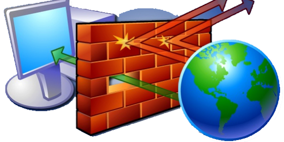
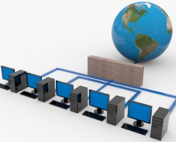
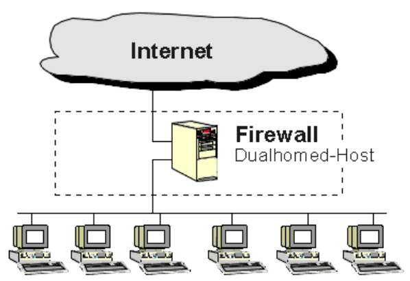
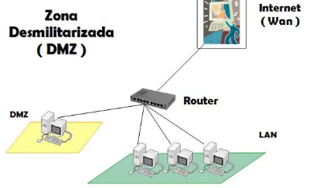
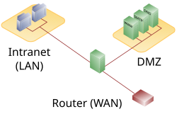
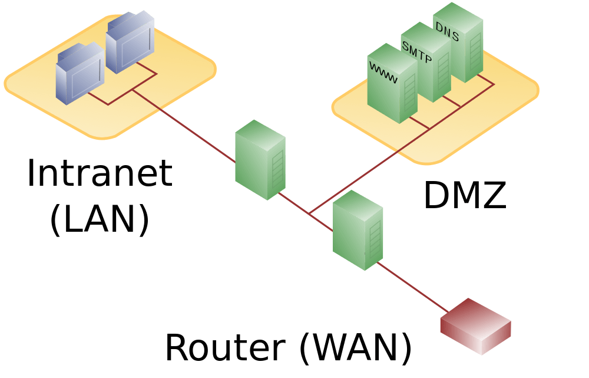

🔥 ¿Qué es un cortafuegos (firewall)? 🧱
Un cortafuegos es un sistema de seguridad que controla y filtra el tráfico de red (entrante y saliente) según reglas definidas. Su objetivo es proteger una red o equipo frente a accesos no autorizados o ataques
Características principales de un firewall
- Filtrado de paquetes: Analiza cada paquete de red y lo bloquea o permite según reglas.
- Inspección de estado: (stateful) Entiende el contexto de las conexiones (por ejemplo, solicitudes ya establecidas).
- Filtrado por aplicación: Detecta y controla tráfico de aplicaciones específicas (ej. WhatsApp, YouTube).
- Listas de control de acceso (ACLs): Define qué tráfico está permitido o denegado.
- Registro y alertas: Guarda eventos de tráfico y puede enviar alertas de seguridad.
- Traducción de direcciones (NAT): Oculta direcciones internas detrás de una IP pública.
- VPN: Algunos cortafuegos permiten establecer túneles VPN seguros.
Tipos de cortafuegos (según función)
| Tipo de Firewall | ¿Cómo funciona? | Ejemplo de uso |
|---|---|---|
| Filtrado de paquetes básico : Stateless | Evalúa IP, puerto y protocolo sin contexto. | Routers simples, firewalls básicos. |
| Stateful | Recuerda el estado de las conexiones (seguimiento de sesiones). | Firewalls de red empresariales. |
| De capa de aplicación | Analiza el contenido y protocolo (como HTTP, FTP, etc.). | Proxy con inspección profunda. |
| Next-Generation Firewall (NGFW) | Combina inspección profunda, IPS, control de aplicaciones y usuarios. | Seguridad moderna en redes empresariales. |
La diferencia entre un firewall stateful y uno stateless (también llamado packet-filtering básico) está en si el firewall recuerda o no el estado de las conexiones.
Un firewall stateless analiza cada paquete de forma independiente, sin tener en cuenta lo que ocurrió antes.
Un firewall stateful mantiene una tabla de estados de conexión (state table).
Todo en uno: Dispositivos UTM (En INCIBE )
Un UTM (Unified Threat Management) es una plataforma de seguridad “todo en uno” pensada para simplificar la gestión en redes pequeñas o medianas.
- Suele integrar en un solo dispositivo
- Firewall tradicional
- Antivirus / antimalware
- Filtrado web
- IDS/IPS (detección y prevención de intrusiones)
- VPN
- Antispam (a veces)
Tipos de cortafuegos (según alcance)
| Tipo de Firewall | ¿Cómo funciona? | Ejemplo de uso |
|---|---|---|
| Basado en host | Instalado en el dispositivo que protege (como software). | Windows Firewall, iptables. |
| Basado en red | Instalado entre redes, protege múltiples dispositivos. | Cisco ASA, Fortinet, pfSense. |
Firewall personal - Basado en host - (Suelen ser por Software)

Un firewall personal protege un único dispositivo (ordenador, portátil, móvil).
- Sus funciones típicas son
- Permitir o bloquear conexiones entrantes y salientes. ⤷ Suele actuar sobre una interfaz de red
- Controlar qué aplicaciones pueden acceder a Internet.
- Proteger el equipo cuando se conecta a redes públicas.
- Aplicar reglas sencillas definidas por el usuario o por defecto.
Ejemplos: Windows Defender, tinywall, ZoneAlarm, ufw, gufw, etc...
Router SOHO - (Suelen ser por Hardware)
Un firewall/router SOHO es un dispositivo de red diseñado para entornos SOHO (Small Office / Home Office), es decir, pequeñas oficinas o viviendas con necesidades de red básicas o medias.
- Funciones típicas en un SOHO
- Conecta la red local (LAN) con Internet (WAN)
- Gestiona direcciones IP (DHCP)
- NAT (compartir una IP pública entre varios dispositivos)
- Wi-Fi integrado (en muchos modelos)
- Control parental o filtrado web
- VPN básica (en algunos modelos)
- QoS (priorización de tráfico, por ejemplo videollamadas)
- Filtra el tráfico de red entrante y saliente. Bloquea accesos no autorizados
- Permite definir reglas de seguridad (por puertos, IPs, protocolos, etc.)
Ejemplos: Router TP-Link, Asus, Netgear, ...
Firewall corporativo - Basado en red
- Suelen ser por
- Hardware+firmware : CISCO, Sophos, WatchGuard, PaloAlto Networks, Fortinet Fortigate ...
- Hardware+Software : IpCop, IpFire, PfSense, OPNsense...

Un firewall corporativo protege una red completa: oficinas, centros de datos, sucursales o entornos en la nube.
Para proteger una red, se necesita una màquina con "al menos" dos interfaces de red. Una conectada a la red externa y otra a la red interna
- Además de filtrar tráfico, suele incorporar funciones avanzadas
- Control centralizado de dispositivos.
- Segmentación de redes internas.
- Inspección profunda de paquetes (DPI).
- VPN para empleados remotos.
- Prevención de intrusiones (IPS).
- Filtrado web y de aplicaciones.
- Detección de malware.
- Registro y auditoría de eventos.
- Alta disponibilidad y redundancia.
Funciones clave de un cortafuegos
- Permitir o bloquear tráfico según reglas.
- Proteger contra ataques externos (escaneos, malware, accesos indebidos).
- Crear zonas seguras (DMZ, subredes, VLANs).
- Registrar intentos de acceso y generar alertas.
- Traducir direcciones (NAT) para permitir conexión a internet.
- Controlar acceso a páginas web o servicios en la red.
Arquitecturas
Podemos encontrar distintas configuraciones
dual-homed
La arquitectura dual-homed host es un diseño de seguridad de red en el que un equipo (host o firewall) tiene dos interfaces de red físicas, actuando como puente controlado entre dos redes

dmz host controlado
La DMZ de host controlado (Screened Host Architecture) es una arquitectura de seguridad en la que un host bastión (un servidor especialmente protegido) es accesible desde Internet, mientras que la red interna permanece protegida por un dispositivo de filtrado.

dmz subred - Screened Host
En una arquitectura Screened Host, normalmente hay un único firewall o router filtrante que protege la red interna. Los servidores públicos pueden estar conectados a una red separada (DMZ), pero la protección principal depende de ese único dispositivo.

- Características
- Un solo punto de filtrado.
- Menor coste y menor complejidad.
- Más fácil de administrar.
- Si el firewall es comprometido, tanto la DMZ como la LAN pueden quedar expuestas.
- Adecuado para organizaciones pequeñas.
- Un firewall de tipo Screened Host dispone de al menos tres interfaces de red
- Interfaz roja: conexión a Internet (WAN).
- Interfaz verde: conexión a la red local interna (LAN).
- Interfaz naranja: conexión a la DMZ, donde se ubican los servidores expuestos al exterior.
Pueden haber otras interfaces (opcionales), como la azul
- Azul → Red inalámbrica (Wi-Fi) o red semiconfiable.
Estos colores son una convención que usan distribuciones de firewalls para indicar el tipo de red que esta conectada a una interfaz concereta (como por ejemplo, algunas configuraciones de IPFire)
dmz subred - Screened Subnet
La diferencia fundamental está en dónde se sitúa la DMZ y cuántos dispositivos de filtrado la protegen.
En una arquitectura Screened Subnet, la DMZ queda aislada entre dos barreras de seguridad.

- Características
- Dos niveles de protección.
- Mayor aislamiento entre Internet y la LAN.
- Si un servidor de la DMZ es comprometido, el atacante todavía debe superar otra barrera para llegar a la red interna.
- Mayor coste y complejidad de gestión.
- Más utilizada en entornos corporativos.
Niveles de Filtrado de un Cortafuegos (Firewall)
¿Qué es el filtrado en un firewall?
Un firewall puede analizar y decidir si permite o bloquea el tráfico en diferentes niveles del modelo OSI. Cuanto más alto es el nivel, más detallado es el análisis.
Niveles de filtrado
| Nivel de filtrado | Capa OSI | ¿Qué analiza? | Ejemplo |
|---|---|---|---|
| Red | Capa 3 | Dirección IP de origen y destino | Permitir solo IPs de confianza |
| Transporte | Capa 4 | Puerto y protocolo (TCP/UDP) | Bloquear puerto 21 (FTP), permitir 443 (HTTPS) |
| Aplicación | Capas 5-7 | Contenido del tráfico, comandos o URLs | Bloquear redes sociales, analizar payload HTTP |
| Conexión/estado | Capa 4+ | Contexto de la conexión | Permitir solo respuestas a conexiones válidas |
| Identidad | Más allá de OSI | Usuario, grupo, perfil | Permitir acceso según rol en la empresa |
Resumen
- Filtrado IP y puertos (L3 y L4): básico, rápido.
- Filtrado con estado (L3 y L4): seguimiento de sesiones válidas.
- Filtrado de aplicación (L7): detecta contenido y protocolos específicos.
- Firewall con Deep Packet Inspection (DPI) Niveles OSI L4-L7
- Filtrado por identidad (NGFW) L3-L7 : personalizado por usuario o grupo. +IDS/IPS
Instalación y Configuración de un Cortafuegos (Firewall)
Tipos de instalación
| Tipo de firewall | Forma de instalación |
|---|---|
| Software | Se instala en un sistema operativo (Windows Firewall, UFW, iptables). |
| Hardware | Dispositivo físico dedicado (ej: Cisco ASA, FortiGate). |
| Virtual/appliance | Máquina virtual en servidores o en la nube (pfSense, OPNsense, Sophos XG). |
Pasos para configurar un firewall
- Elegir el tipo de firewall según el entorno.
- Instalar el software o dispositivo.
- En Linux: instalar iptables, ufw o firewalld.
- En Windows: activar y configurar el Firewall de Windows.
- En red: conectar el firewall entre el router y la red interna.
- Acceder a la interfaz de configuración (web o consola).
- Vía interfaz web, consola, o app.
- Ejemplo: https://192.168.1.1 o consola SSH.
- Crear reglas de acceso (permitir/bloquear por IP, puerto, etc.).
- Definir qué tráfico se permite o bloquea.
- Basado en IP, puerto, protocolo o aplicación.
- Establecer zonas (WAN, LAN, DMZ).
- Activar NAT, VPN o IDS si es necesario.
- Probar el funcionamiento con herramientas como
pingonmap. - Guardar copias de seguridad de la configuración.
Ejemplo básico de configuración en Linux con UFW
sudo apt install ufw
sudo ufw default deny
sudo ufw allow 22/tcp
sudo ufw allow 80,443/tcp
sudo ufw enable¿Qué son las reglas de filtrado en un firewall?
Las reglas de filtrado son instrucciones que un firewall utiliza para permitir o denegar el tráfico de red según criterios como IP, puerto, protocolo o dirección.
Estas reglas se evalúan en orden y forman una lista que el firewall analiza cada vez que pasa un paquete de datos./p>
Componentes de una regla de filtrado
| Componente | Descripción |
|---|---|
| Acción | Permitir (allow) o denegar (deny) |
| Dirección | Entrada o salida |
| Protocolo | TCP, UDP, ICMP, etc. |
| IP origen | Desde dónde viene el tráfico (dirección o red) |
| IP destino | Hacia dónde va el tráfico (dirección o red) |
| Puerto | Puerto de red (ej: 80, 443) |
| Estado | Nuevo, establecido, relacionado |
Ejemplos de reglas
- Permitir TCP del puerto 80 desde cualquier: IP Permite tráfico web entrante
- Denegar todo el tráfico de la IP 192.168.0.100: Bloquea un equipo específico
- Permitir SSH solo desde red interna 192.168.1.0/24: Permite administración segura local
- Permitir salidas al puerto 443 (HTTPS): Permite navegación segura hacia fuera
- Denegar ICMP (ping): Bloquea respuestas de ping para ocultar la red
📋 ¿Qué es el registro de sucesos en un firewall?
El registro de sucesos en un firewall es un conjunto de anotaciones automáticas que reflejan la actividad del tráfico de red y las decisiones que toma el firewall (permitir, bloquear, alertar, etc.).
El " log " del firewall
Estos registros ayudan a los administradores a:- Auditar accesos.
- Detectar ataques o comportamientos sospechosos.
- Diagnosticar problemas de red.
- Cumplir normativas de seguridad.
¿Qué se registra?
- Fecha y hora. Momento exacto del evento.
- Dirección IP de origen. Desde dónde proviene el tráfico.
- Dirección IP destino. A dónde se dirigía.
- Puerto origen/destino. Identificadores del servicio usado.
- Protocolo. TCP, UDP, ICMP, etc.
- Acción tomada. Permitido, denegado, alertado.
- Regla aplicada. Qué regla del firewall se activó.
- Estado de la conexión. Nueva, establecida, finalizada.
- Usuario (si aplica). En cortafuegos con autenticación.
La revisión de logs de un firewall es una tarea esencial para detectar actividades sospechosas, asegurar el cumplimiento de políticas y mejorar la seguridad de la red.
Acceso a los logs
- Accede a través de
- Interfaz web del firewall
- Syslog centralizado (si tienes un servidor de logs)
- Herramientas SIEM (como Splunk, Graylog, ELK)
Exporta los logs si es necesario, en formato .log, .txt o .csv.
- Herramientas útiles para analizar logs
- CLI o scripts (grep, awk, etc.) - para filtros rápidos.
- SIEM (Splunk, ELK, Graylog) - para visualización y alertas.
- Herramientas del fabricante - Fortinet, Cisco ASA, pfSense, etc., suelen tener herramientas propias.
- ¿Qué buscar?
- Intento de intrusión o escaneo Muchos intentos de conexión desde una sola IP a múltiples puertos (port scanning).
- Conexiones no autorizadas IPs internas intentando conectarse a sitios no permitidos.
- Anomalías o patrones inusuales Aumento repentino de tráfico o intentos fallidos.
- Bloqueos recurrentes Repeticiones del mismo error o bloqueo.
Conexiones denegadas en puertos no habituales (ej: puerto 23 - Telnet).
Accesos en horas fuera del horario normal.
Mensajes del tipo “SYN flood”, “Ping of Death”, etc.
Pueden indicar mala configuración o intentos de ataque automatizados.
Opciones de Cortafuegos (Firewalls)
Cortafuegos Libres (Open Source)
| Nombre | Descripción breve | Plataforma |
|---|---|---|
| pfSense | Basado en FreeBSD, muy potente y flexible. | Software / VM / Hardware |
| OPNsense | Fork moderno de pfSense con interfaz mejorada. | Software / VM |
| IPFire | Enfocado en simplicidad y seguridad. | Software / Hardware |
| iptables | Herramienta de filtrado en Linux. | Software (CLI) |
| UFW | Interfaz fácil para iptables en Ubuntu. | Software (CLI) |
Cortafuegos Propietarios (Comerciales)
| Fortinet (FortiGate) | Muy popular en empresas, incluye UTM, VPN, IPS. | Hardware / VM |
| Cisco ASA | Solución empresarial con soporte de red avanzado. | Hardware / VM |
| Sophos XG | Firewall moderno con buena interfaz y funciones UTM. | Hardware / VM |
| Palo Alto | Cortafuegos de nueva generación con análisis profundo. | Hardware / VM |
🧱 Cortafuegos por Hardware
- FortiGate
- Cisco ASA
- Sophos XG Appliance
- pfSense Box
- WatchGuard | Seguridad todo en uno para PYMEs.
Firewalls UTM (Gestión Unificada de Amenazas)
Los UTM (Unified Threat Management) integran múltiples funciones de seguridad además del cortafuegos:
- FortiGate
- Sophos XG
- OPNsense (con plugins)
- WatchGuard
Solución de Problemas con Clientes (Firewall)
Cuando un cliente (usuario, dispositivo o sistema) no puede conectarse correctamente, puede deberse a políticas o reglas mal configuradas en el firewall. Aquí están los pasos más comunes para identificar y resolver estos problemas
1. Verificar conectividad básica
Antes de entrar en el firewall, revisar....
- ...que el cliente tenga una IP válida.
- Verificar puerta de enlace y DNS.
- Comprobar si puede hacer ping al gateway.
2. Revisar reglas del firewall
- Confirmar que existe una regla que permita el tráfico.
- Verificar que no haya una regla genérica que bloquee.
- Analizar el orden de las reglas.
3. Consultar los registros (logs)
- Buscar eventos relacionados con la IP del cliente.
- Identificar puertos y protocolos que se estan bloqueando.
4. Probar puertos y servicios
- Usar
telnet,nconmap. - Verificar si los puertos necesarios están abiertos (80, 443, ...).
5. Verificar autenticación o perfiles
- Comprobar si se requiere autenticación de usuario.
- Ver si el cliente ha sido autenticado correctamente.
6. Revisar NAT o reenvío de puertos
- Verificar reglas NAT correctamente configuradas.
- Confirmar si hay reenvío de puertos activo.
7. Comprobar filtrado por contenido o aplicación
- Desactivar temporalmente el filtrado por categoría o aplicación.
8. Herramientas de diagnóstico en el propio firewall
- Simular tráfico desde la interfaz del firewall.
- Revisar conexiones activas del cliente.
- Reiniciar sesiones si es necesario.
El tema de la documentación del firewall es muy importante, aunque a veces no se le da tanta atención como a la configuración misma. En redes bien gestionadas, una buena documentación puede ahorrar horas de problemas
🗂️ Documentación del Firewall
La documentación del firewall es el proceso de registrar de forma clara, organizada y actualizada toda la información relacionada con la instalación, configuración, políticas y mantenimiento del firewall. Esta documentación es vital tanto para tareas de soporte como para auditorías, gestión de cambios y continuidad del servicio.
¿Por qué es importante documentar?
- Facilita el mantenimiento: Otros técnicos (o tú mismo en el futuro) podrán entender cómo está configurado el firewall.
- Evita errores: Tener claro qué reglas existen y por qué, reduce la posibilidad de aplicar configuraciones que interfieran entre sí.
- Cumplimiento normativo: Algunas normativas (ISO 27001, PCI-DSS, etc.) requieren documentación de la configuración de seguridad.
- Auditorías y revisiones: Permite demostrar cómo está protegida la red y qué políticas están en vigor.
- Gestión de incidencias: Ayuda a rastrear qué cambios pudieron causar problemas de conectividad o seguridad.
¿Qué debe incluir la documentación?
- Datos generales del sistema
- Modelo y fabricante del firewall.
- Versión de firmware o sistema operativo.
- Diagrama de red donde se visualice el firewall.
- Configuración de red
- Interfaces de red y direcciones IP asignadas.
- Gateways, rutas estáticas, VLANs.
- Políticas de seguridad
- Reglas de acceso entrante y saliente.
- Clasificación de reglas: por zona, por usuario, por aplicación.
- Justificación de cada regla: qué permite/bloquea y por qué.
- Registros de cambios (change log)
- Quién hizo un cambio, cuándo, y qué se modificó.
- Motivo del cambio.
- Configuraciones especiales
- NAT y port forwarding.
- VPNs configuradas.
- Filtros de contenido o de aplicaciones.
- Reglas de detección de intrusiones (IDS/IPS).
- Usuarios y autenticación
- Métodos de autenticación configurados (LDAP, Radius, local...).
- Roles y permisos asignados.
- Alertas y registros
- Configuración de logs.
- Alertas o notificaciones configuradas.
- Revisión periódica de eventos.
- Respaldo y restauración
- Procedimiento para hacer backups de configuración.
- Procedimiento de restauración en caso de fallo.
Buenas prácticas para documentar
- Mantener actualizado: La documentación debe reflejar los cambios en tiempo real o mediante procesos regulares.
- Centralizar la información: Usa una wiki, gestor documental o herramienta para almacenarla.
- Accesible y segura: Solo el personal autorizado debe tener acceso, pero no debe estar tan escondida que no se encuentre.
- Versionar los documentos: Registra cada edición y guarda copias anteriores por seguridad.